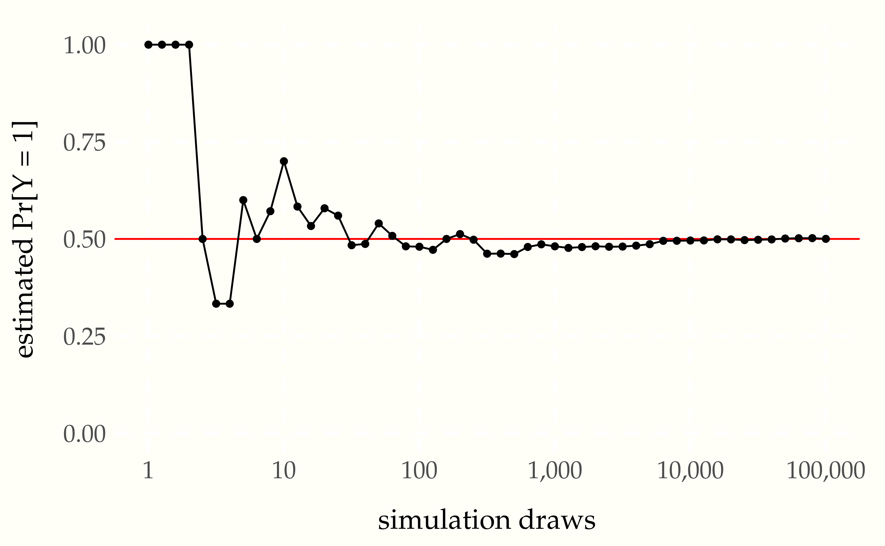

Let \(Y\) be the result of a fair coin flip. Not a general coin flip, but a specific instance of flipping a specific coin at a specific time. Defined this way, \(Y\) is what’s known as a random variable, meaning a variable that takes on different values with different probabilities.9 Random variables are conventionally written using upper-case letters to distinguish them from ordinary mathematical variables which are bound to single values and conventionally written using lower-case letters.
Probabilities are scaled between 0% and 100% as in natural language. If a coin flip is fair, there is a 50% chance the coin lands face up (“heads”) and a 50% chance it lands face down (“tails”). For concreteness and ease of analysis, random variables will be restricted to numerical values. For the specific coin flip in question, the random variable \(Y\) will take on the value 1 if the coin lands heads and the value 0 if it lands tails.
An outcome such as the coin landing heads is called an event in probability theory. For our purposes, events will be defined as conditions on random variables. For example, \(Y = 1\) denotes the event in which our coin flip lands heads. The functional \(\mbox{Pr}[\, \cdot \,]\) defines the probability of an event. For example, for our fair coin toss, the probability of the event of the coin landing heads is written as
\[ \mbox{Pr}[Y = 1] = 0.5. \]
In order for the flip to be fair, we must have \(\mbox{Pr}[Y = 0] = 0.5\), too. The two events \(Y = 1\) and \(Y = 0\) are mutually exclusive in the sense that both of them cannot occur at the same time. In probabilistic notation,
\[ \mbox{Pr}[Y = 1 \ \mbox{and} \ Y = 0] = 0. \]
The events \(Y = 1\) and \(Y = 0\) are also exhaustive, in the sense that at least one of them must occur. In probabilistic notation,
\[ \mbox{Pr}[Y = 1 \ \mbox{or} \ Y = 0] = 1. \]
In these cases, events are conjoined (with “and”) and disjoined (with “or”). These operations apply in general to events, as does negation. As an example of negation,
\[ \mbox{Pr}[Y \neq 1] = 0.5. \]
Even though the coin flip will have a specific outcome in the real world, we consider alternative ways the world could have been. Thus even if the coin lands heads \((Y = 1)\), we entertain the possibility that it could’ve landed tails \((Y = 0)\). Such counterfactual reasoning is the key to understanding probability theory and applied statistical inference.
An alternative way the world could be, that is, a possible world, will determine the value of every random variable. The collection of all such possible worlds is called the sample space.10 The sample space conventionally written as \(\Omega\), the capitalized form of the last letter in the Greek alphabet. The sample space may be conceptualized as an urn containing a ball for each possible way the world can be. On each ball is written the value of every random variable.11 Formally, a random variable \(X\) can be represented as a function from the sample space to a real value, i.e., \(X:\Omega \rightarrow \mathbb{R}\). For each possible world \(\omega \in \Omega\), the variable \(X\) takes on a specific value \(X(\omega) \in \mathbb{R}\).
Now consider the event \(Y = 0\), in which our coin flip lands tails. In some worlds, the event occurs (i.e., \(0\) is the value recorded for \(Y\)) and in others it doesn’t. An event picks out the subset of worlds in which it occurs.12 Formally, an event is defined by a subset of the sample space, \(E \subseteq \Omega\).
We are now going to turn our attention to computation, and in particular, simulation, with which we will use to estimate event probabilities.
The primitive unit of simulation is a function that acts like a random number generator. But we only have computers to work with and they are deterministic. At best, we can created so-called pseudorandom number generators. Pseudorandom number generators, if they are well coded, produce deterministic streams of output that appear to be random.13 There is a large literature on pseudorandom number generators and tests for measurable differences from truly random streams.
For the time being, we will assume we have a primitive pseudorandom
number generator uniform_01_rng(), which behaves roughly like it has
a 50% chance of returning 1 and a 50% chance of returning 0.14 The name
arises because random variables in which every possible outcome is
equally likely are said to be uniform.
Suppose we want to simulate our random variable \(Y\). We can do so by
calling uniform_01_rng and noting the answer.
A simple program to generate a realization of a random coin flip,
assign it to an integer variable y, and print the result could be
coded as follows.15 Computer programs are presented using a consistent
pseudocode, which provides a sketch of a program that should be
precise enough to be coded in a concrete programming language. R
implementations of the pseudocode generate the results and are
available in the source code repository for this book.
int y = uniform_01_rng()
print 'y = ' yThe variable y is declared to be an integer and assigned to the
result of calling the uniform_01_rng() function.16 The use of a
lower-case \(y\) was not accidental. The variable \(y\) represents an
integer, which is the type of a realization of a random \(Y\)
representing the outcome of a coin flip. In code, variables are
written in typewriter font (e.g., y), whereas in text they are
written in italics like other mathematical variables (e.g., \(y\)).
The print statement outputs the quoted string y = followed
by the value of the variable y. Executing the program might produce
the following output.
y = 1If we run it a nine more times, it might print
y = 1
y = 1
y = 1
y = 1
y = 0
y = 0
y = 1
y = 1
y = 0When we say it might print these things, we mean the results will depend on the state of the pseudorandom number generator.
Simulations can be made exactly reproducible by setting what is known as the seed of a pseudorandom number generator. This seed establishes the deterministic sequence of results that the pseudorandom number generator produces. For instance, contrast the program
seed_rng(1234)
for (n in 1:10) print uniform_01_rng()
for (n in 1:10) print uniform_01_rng()which produces the output
0 1 1 1 1 1 0 0 1 1
1 1 0 1 0 1 0 0 0 0with the program
seed_rng(1234)
for (n in 1:10) print uniform_01_rng()
seed_rng(1234)
for (n in 1:10) print uniform_01_rng()which produces
0 1 1 1 1 1 0 0 1 1
0 1 1 1 1 1 0 0 1 1Resetting the seed in the second case causes exactly the same ten pseudorandom numbers to be generated a second time. Every well-written pseudorandom number generator and piece of simulation code should allow the seed to be set manually to ensure reproducibility of results.17 Replicability of results with different seeds is a desirable, but stricter condition.
We know that \(\mbox{Pr}[Y = 1]\) is 0.5 because it represents the flip of a fair coin. Simulation based methods allow us to estimate event probabilities straightforwardly if we can generate random realizations of the random variables involved in the event definitions.
For example, we know we can generate multiple simulations of flipping the same coin. That is, we’re not simulating the result of flipping the same coin ten different times, but simulating ten different realizations of exactly the same random variable, which represents a single coin flip.
The fundamental method of computing event probabilities will not change as we move through this book. We simply simulate a sequence of values and return the proportion in which the event occurs as our estimate.
For example, let’s simulate 10 values of \(Y\) again and record the proportion of the simulated values that are 1. That is, we count the number of time the event occurs in that the simulated value \(y^{(m)}\) is equal to 1.
occur = 0
for (m in 1:M)
y[m] = uniform_01_rng()
occur = occur + (y[m] == 1)
estimate = occur / M
print `estimated Pr[Y = 1] = ' estimateThe equality operator is written as ==, as in the condition y[m] == 1 to distinguish it from the assignment statement y[m] = 1, which
sets the value of y[m] to 1. The condition expression y[m] == 1
evaluates to 1 if the condition is true and 0 otherwise.
If we let uniform_01_rng(M) be the result of generating M
pseudorandom coin flip results, the program can be shortened to
y <- uniform_01_rng(M)
occur = sum(y == 1)
estimate = occur / MA condition such as y == 1 on a sequence returns a sequence of the
same length with value 1 in positions where the condition is true. For
instance, if
y = (2, 1, 4, 2, 2, 1)then
y == 2evaluates to
(1, 0, 0, 1, 1, 0).Thus sum(y == 1) is the number of positions in the sequence y
which have the value 1. Running the program provides the following
estimate based on ten simulation draws.
1 1 0 1 0 1 0 0 0 0
estimated Pr[Y = 1] = 0.4Let’s try that a few more times.
0 0 0 0 0 1 1 1 1 0 estimated Pr[Y = 1] = 0.4
0 0 0 1 0 1 0 0 1 1 estimated Pr[Y = 1] = 0.4
1 1 0 1 0 1 1 0 0 1 estimated Pr[Y = 1] = 0.6
0 0 1 1 0 1 0 1 0 1 estimated Pr[Y = 1] = 0.5
1 0 0 0 0 1 0 1 0 1 estimated Pr[Y = 1] = 0.4
0 1 0 1 0 1 0 0 0 1 estimated Pr[Y = 1] = 0.4
1 0 0 1 0 1 0 0 0 1 estimated Pr[Y = 1] = 0.4
0 1 0 0 0 1 0 0 0 1 estimated Pr[Y = 1] = 0.3
0 1 0 0 0 0 0 0 0 0 estimated Pr[Y = 1] = 0.1
1 0 1 0 0 1 1 0 0 1 estimated Pr[Y = 1] = 0.5The estimates are close, but not very exact. What if we use 100 simulations?
1 1 1 1 0 0 0 1 0 0 1 1 0 0 1 0 1 1 1 1 1 1 0 0 0 1 1 1 1 1 0 0 0 1 0 1 1 1 0 1 0 1 0 0 0 1 0 0 1 0 1 1 1 0 0 1 0 1 0 0 0 0 1 0 1 0 1 1 0 1 1 1 0 1 1 1 1 1 1 1 1 1 0 1 1 1 0 0 0 1 1 0 0 1 1 1 1 1 0 1
estimated Pr[Y = 1] = 0.59That’s closer than most of the estimates based on ten simulation draws. Let’s try that a few more times without bothering to print all 100 simulated values,
estimated Pr[Y = 1] = 0.48
estimated Pr[Y = 1] = 0.51
estimated Pr[Y = 1] = 0.62
estimated Pr[Y = 1] = 0.54
estimated Pr[Y = 1] = 0.5
estimated Pr[Y = 1] = 0.52
estimated Pr[Y = 1] = 0.49
estimated Pr[Y = 1] = 0.52
estimated Pr[Y = 1] = 0.42
estimated Pr[Y = 1] = 0.45What happens if we let \(M = 10,000\) simulations?
estimated Pr[Y = 1] = 0.5
estimated Pr[Y = 1] = 0.5
estimated Pr[Y = 1] = 0.51
estimated Pr[Y = 1] = 0.49
estimated Pr[Y = 1] = 0.5
estimated Pr[Y = 1] = 0.5
estimated Pr[Y = 1] = 0.51
estimated Pr[Y = 1] = 0.5
estimated Pr[Y = 1] = 0.5
estimated Pr[Y = 1] = 0.49Now the estimates are very close to the true probability being estimated (i.e., 0.5, because the flip is fair). This raises the questions of how many simulation draws we need in order to be confident our estimates are close to the values being estimated.
Visualization in the form of simple plots goes a long way toward understanding concepts in statistics and probability. A traditional way to plot what happens as the number of simulation draws \(M\) increases is to keep a running tally of the estimate as each draw is made and plot the estimated event probability \(\mbox{Pr}[Y = 1]\) for each \(m \in 1:M\).18 See, for example, the quite wonderful little book, Bulmer, M.G., 1965. Principles of Statistics. Oliver and Boyd, Edinburgh.
To calculate such a running tally of the estimate at each online, we can do this:
occur = 0
for (m in 1:M)
y[m] = uniform_01_rng(M)
occur = occur + (y[m] == 1)
estimate[m] = occur / mRecall that the expression (y[m] == 1) evaluates to 1 if the
condition holds and 0 otherwise. The result of running the program is
that estimate[m] will hold the estimate \(\mbox{Pr}[Y = 1]\) after \(m\)
simulations. We can then plot the estimates as a function
of the number of draws using a line plot to display the trend.
Figure 1.1: Monte Carlo estimate of probability that a coin lands head as a function of the number of simulation draws. The line at 0.5 marks the true probability being estimated.
The \(x\)-axis is plotted on the log scale in order to provide room for the early draws. With a log scale axis, each factor gets the same width rather than each multiple. That is, the interval \((10, 100)\) is plotted with the same width as the intervals \((1, 10)\) and \((100,\, 1\,000)\). Plotting on a linear scale, the interval \((1, 10\,000)\) would take only a tenth of the width of the \(x\)-axis, with nine tenths being given over to \((10\,000,\, 100\,000)\).
Figure 1.2: Same plot as the previous one, but with the \(x\)-axis on the linear scale, rather than the log scale.
Plotting the progression of multiple simulations demonstrates the trend in errors.
Figure 1.3: One hundred replicates of the previous plot overlaid (starting from one hundred tosses). Each line is the sequence of estimates of the probability that a fair coin toss lands head as a function of the number of simulation draws. The line at 0.5 marks the true probability which is being estimated. The overall reduction in estimation noise with increasing numbers of draws is illustrated by the decreasing band around the true value.
Figure 1.4: Same plot as before, but continuing the \(x\)-axis from ten thousand to a million simulation draws. The \(y\)-axis is only a tenth as wide, ranging between 0.49 and 0.51 rather than 0.4 and 0.6. This shows that convergence to the true value is scale free.
The law of large numbers19 Which technically comes in a strong and weak form. says roughly that as the number of simulated values grows, the average will converge to the expected value. In this case, our estimate of \(\mbox{Pr}[Y = 1]\) can be seen to converge to the true value of 0.5 as the number of simulations \(M\) increases. Because the quantities involved are probabilistic, the exact specification is a little more subtle than the \(\epsilon\)-\(\delta\) proofs in calculus.
We will use parenthesized superscripts to pick out the elements of a sequence of simulations. For example,
\[ y^{(1)}, y^{(2)}, \ldots, y^{(M)} \]
will be used for \(M\) simulations of a single random variable \(Y\).20 Each \(y^{(m)}\) is a possible realization of \(Y\), which is why they are written using lowercase. It’s important to keep in mind that this is \(M\) simulations of a single random variable, not a single simulation of \(M\) different random variables.
Before we get going, we’ll need to introduce indicator function notation. For example, we write
\[ \mathrm{I}[y^{(m)} = 1] = \begin{cases} 1 & \mbox{if} \ y^{(m)} = 1 \\[4pt] 0 & \mbox{otherwise} \end{cases} \]
The indicator function maps a condition, such as \(y^{(m)} = 1\) into the value 1 if the condition is true and 0 if it is false.21 Square bracket notation is used for functions when the argument is itself a function. For example, we write \(\mbox{Pr}[Y > 0]\) because \(Y\) is a random variable, which is modeled as a function. We also write \(\mathrm{I}[x^2 + y^2 = 1]\) because the standard bound variables \(x\) and \(y\) are functions from contexts defining variable values.
Now we can write out the formula for our estimate of \(\mbox{Pr}[Y = 1]\) after \(M\) draws,
\[ \begin{array}{rcl} \mbox{Pr}[Y = 1] & \approx & \frac{\displaystyle \mathrm{I}[y^{(1)} = 1] \ + \ \mathrm{I}[y^{(2)} = 1] \ + \ \cdots \ + \ \mathrm{I}[y^{(M)} = 1]} {\displaystyle M} \end{array} \]
That is, our estimate is the proportion of the simulated values which take on the value 1. It quickly becomes tedious to write out sequences, so we will use standard summation notation, where we write
\[ \mathrm{I}\!\left[y^{(1)} = 1] + \mathrm{I}[y^{(2)} = 1] + \cdots + \mathrm{I}[y^{(M)} = 1\right] \ = \ \sum_{m=1}^M \mathrm{I}[y^{(m)} = 1] \]
Thus we can write our simulation-based estimate of the probability that a fair coin flip lands heads as22 In general, the way to estimate an event probability \(\phi(Y)\) where \(\phi\) defines some condition, given simulations \(y^{(1)}, \ldots, y^{(M)}\) of \(Y\), is as \[\mbox{Pr}[\phi(Y)] = \frac{1}{M} \sum_{m = 1}^M \mathrm{I}[\phi(y^{(m)})].\]
\[ \mbox{Pr}[Y = 1] \approx \frac{1}{M} \, \sum_{m=1}^M \mathrm{I}[y^{(m)} = 1] \]
The form \(\frac{1}{M} \sum_{m=1}^M\) will recur repeatedly in simulation — it just says to average over values indexed by \(m \in 1:M\).23 We are finally in a position to state the strong law of large numbers as the event probability of a limit, \[\mbox{Pr}\!\left\lbrack \lim_{M \rightarrow \infty} \frac{1}{M} \sum_{m = 1}^M \mathrm{I}\!\left\lbrack y^{(m)} = 1 \right\rbrack \ = \ 0.5 \right\rbrack,\] where each \(y^{(m)}\) is a separate fair coin toss.
The law of large numbers tells us that with more simulations, our estimates become more and more accurate. But they do not tell us how quickly we can expect that convergence to proceed. The central limit theorem provides the convergence rate.
First, we have to be careful about what we’re defining. First, we define the error for an estimate as the difference from the true value,
\[ \left( \frac{1}{M} \sum_{m=1} \mathrm{I}[y^{(m)} = 1] \right) - 0.5 \]
The absolute error is just the absolute value24 In general, the absolute value function applied to a real number \(x\) is written as \(|x|\) and defined to be \(x\) if \(x\) is non-negative and \(-x\) if \(x\) is negative. of this,
\[ \left| \, \left( \frac{1}{M} \sum_{m=1} \mathrm{I}[y^{(m)} = 1] \right) - 0.5 \, \right| \]
Figure 1.5: The absolute error of the simulation-based probability estimate as a function of the number of simulation draws. One hundred sequences of one million flips are shown.
Plotting both the number of simulations and the absolute error on the log scale reveals the rate at which the error decreases with more draws.
Figure 1.6: The log of the absolute error. With both axes on the log scale, the slope of the relationship between the number of draws and estimation error is revealed. The central limit theorem predicts for each \(M\) that \(68\%\) percent of the estimates will be below the blue line and \(95\%\) percent below the red line.
The red and blue lines show the linear relationship between the log of the number of simulation draws and the log absolute error. The slope of these two lines is \(-\frac{1}{2}\).
If we let \(\epsilon_M\) be the absolute error after \(M\) simulation draws, the linear relationship plotted in the figures have the form
\[ \log \epsilon_M = -\frac{1}{2} \, \log M + \mbox{const}. \]
When writing “const” in a mathematical expression, the presumption is that it refers to a constant that does not depend on the free variables of interest (here, \(M\), the number of simulation draws). Ignoring constants lets us focus on the order of the dependency. The red line and blue line have the same slope, but different constants.
Seeing how this plays out on the linear scale requires exponentiating both sides of the equation and reducing,
\[ \begin{array}{rcl} \exp(\log \epsilon_M) & = & \exp( -\frac{1}{2} \, \log M + \mbox{const} ) \\[6pt] % \epsilon_M & = & \exp( -\frac{1}{2} \, \log M ) \times \exp(\mbox{const}) % \\[6pt] \epsilon_M & = & \exp( \log M )^{-\frac{1}{2}} \times \exp(\mbox{const}) \\[6pt] \epsilon_M & = & \exp(\mbox{const}) \times M^{-\frac{1}{2}} \end{array} \]
Dropping the constant, this relationship between the expected absolute error \(\epsilon_M\) after \(M\) simulation draws may be succinctly summarized using proportionality notation,25 In general, we write \[f(x) \propto g(x)\] if there is a positive constant \(c\) that does not depend on \(x\) such that \[f(x) = c \times g(x).\] For example, \[3x^2 \propto 9x^2,\] with \(c = \frac{1}{3}\).
\[ \displaystyle \epsilon_M \ \propto \ \frac{\displaystyle 1}{\displaystyle \sqrt{M}}. \]
This is a fundamental result in statistics derived from the central limit theorem. The central limit theorem governs the accuracy of almost all simulation-based estimates. We will return to a proper formulation when we have the scaffolding in place to deal with the pesky constant term.
In practice, what does this mean? It means that if we want to get an extra decimal place of accuracy in our estimates, we need one hundred (100) times as many draws. For example, the plot shows error rates bounded by roughly 0.01 with \(10\,000\) draws, yielding estimates that are very likely to be within \((0.49, 0.51).\) To reduce that likely error bound to 0.001, that is, ensuring estimates are very likely in \((0.0499, 0.501),\) requires 100 times as many draws (i.e., a whopping \(1\,000\,000\) draws).26 For some perspective, \(10\,000\) is the number of at bats in an entire twenty-year career for a baseball player, the number of field goal attempts in an entire career of most basketball players, and the size of a very large disease study or meta-analysis in epidemiology.
Usually, one hundred draws will provide a good enough estimate of most quantities of interest in applied statistics. The variability of the estimate based on a single draw depends on the variability of the quantity being estimated. One hundred draws reduces the expected estimation bound to one tenth of the variability of a single draw. Reducing that variability to one hundredth of the variability of a single draw would require ten thousand draws. In most applications, the extra estimation accuracy is not worth the extra computation.